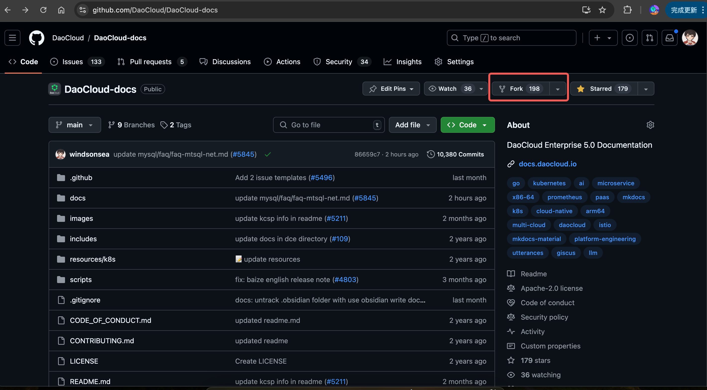
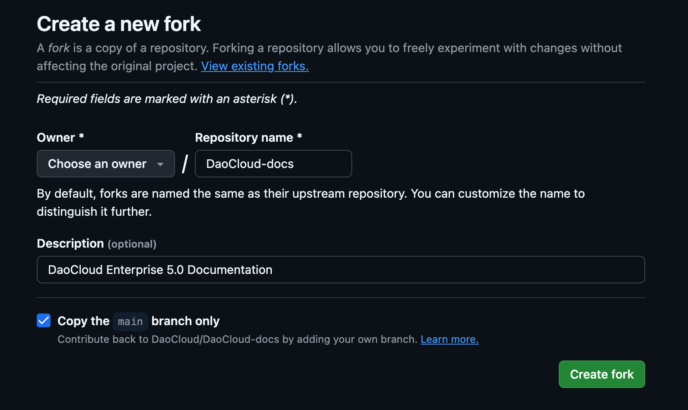
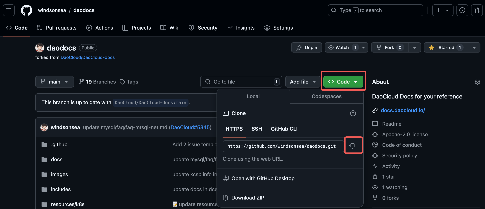

构建离线文档站¶
DCE 5.0 文档完全开源，所有原始 Markdown 文件都托管在 GitHub 上， 采用 Material for MkDocs 静态编译器编译， 遵循 GitHub 标准化 CI 流程，以 Netlify 构建后将编译生成的 HTML 文件包存放在 UCloud 上，供海内外客户使用。
有些企业需要搭建离线的文档站，或者需要构建个性化的导航目录，可以参考本页说明下载/修改文档数据，在本地构建和运行文档站镜像。
Fork 和 Clone¶
-
打开文档仓库 https://github.com/DaoCloud/DaoCloud-docs，点击 Fork 按钮

-
简单配置后点击 Create fork

-
点击右侧的 Code 选择一种方式，比如复制 HTTPS 地址

-
在本地新建一个文件夹，进入命令行模式，运行以下命令克隆数据：
下载好全部数据后，你就可以复制到内部离线环境中修改任意 Markdown 文件。 推荐使用 Git 来做文档版本管理。另外，你也可以使用 GitHub Codespace 等云端环境进行在线调试。
本地修改文档¶
文档目录结构说明：
├── .github # GitHub CI 流程配置
├── docs
│ ├── en
│ └── zh
│ ├── amamba # 应用工作台
│ ├── baize # AI Lab
│ ├── blogs # 博客
│ ├── community # 开源生态项目
│ ├── dce # DCE 介绍
│ ├── download # 下载中心
│ ├── ghippo # 全局管理
│ ├── insight # 可观测性
│ ├── install # 安装
│ ├── kairship # 多云编排
│ ├── kangaroo # 镜像仓库
│ ├── kant # 云边协同
│ ├── kpanda # 容器管理
│ ├── middleware # 中间件
│ ├── mspider # 服务网格
│ ├── native # 云原生研究院
│ ├── network # 网络
│ ├── security # 安全
│ ├── skoala # 微服务
│ ├── storage # 存储
│ ├── videos # 视频教程
│ ├── virtnest # 虚拟机
└── scripts # 常用脚本
文档站插件和导航配置：
-
mkdocs.yml
这是 MkDocs 构建时会读取的插件配置文档，你可以配置 plugins 和 extensions。 比如你可以在 plugins 部分添加：
让构建出的离线包支持 MkDocs 离线插件。
-
navigation.yml
中英目录都有这样一个 YAML 文件，控制文档站左侧的导航。 你可以根据自己采购的模块，定制专属的 Nav 导航目录。 这一部分可能就是你主要的工作量和日常修改任务。
整个文档站的原始数据采用 Markdown 格式，你可以用 VSCode 等编辑器进行编辑。
本地 mkdocs build¶
比如你在本地修改某个中文页面后，你可以进入 zh 目录，执行 build 操作：
Build 成功后，会出现一个 site 目录，其中包含了 MkDocs 编译生成的所有 HTML 文件：
点击 site/index.html 就可以离线查看文档页面。
Tip
如果 mkdocs build 出现插件类的报错：
可以在 mkdocs.yml 中临时注释掉提示有问题的插件后重试：
构建和运行镜像¶
完成本地修改和 mkdocs build 后，你可以参考以下步骤构建和运行镜像。
-
创建 Dockerfile
在 site 目录下创建一个名为
Dockerfile的文件： -
构建 Docker 镜像
在终端中，确保你在
site目录下，运行以下命令构建 Docker 镜像：其中
-t site是给镜像起的名字，.表示 Dockerfile 在当前目录。 -
运行 Docker 镜像并启动一个容器：
其中，
-d表示在后台运行容器，-p 8080:80将主机的 8080 端口映射到容器的 80 端口。 -
打开浏览器，访问
http://localhost:8080，你应该能看到离线文档站页面。
其他用法¶
另外你可以将 mkdocs build 和构建镜像合并为一个流程，比如编写这样一个脚本：
#!/bin/bash
# 设置工作目录
WORK_DIR="docs/zh"
SITE_DIR="$WORK_DIR/site"
# 进入工作目录
cd "$WORK_DIR" || { echo "目录 $WORK_DIR 不存在"; exit 1; }
# 执行 mkdocs build
mkdocs build
# 检查 mkdocs build 是否成功
if [ $? -ne 0 ]; then
echo "mkdocs build 失败"
exit 1
fi
# 创建 Dockerfile
cat << EOF > "$SITE_DIR/Dockerfile"
# 使用一个基础镜像，例如 nginx
FROM nginx:alpine
# 将 site 目录复制到 nginx 的默认目录
COPY site /usr/share/nginx/site/
# 公开端口
EXPOSE 80
EOF
# 构建 Docker 镜像
docker build -t site "$SITE_DIR"
# 检查 Docker build 是否成功
if [ $? -ne 0 ]; then
echo "Docker 镜像构建失败"
exit 1
fi
# 运行 Docker 镜像并启动一个容器
docker run -d -p 8080:80 site
# 检查 Docker run 是否成功
if [ $? -ne 0 ]; then
echo "Docker 容器启动失败"
exit 1
fi
echo "容器已成功启动，您可以访问 http://localhost:8080"
然后在终端运行：
Note
- 确保已安装了 MkDocs 和 Docker，使其命令可以在终端中运行。
- 上述脚本会根据你的工作目录和
site目录路径进行操作，确保路径正确。 - 如果需要在 Dockerfile 中做其他自定义配置，可以在脚本中相应修改
Dockerfile的内容。
当然，你可以在修改 Markdown 文件后，批量执行更多自动化的操作，例如设计更加优秀的 Dockerfile。